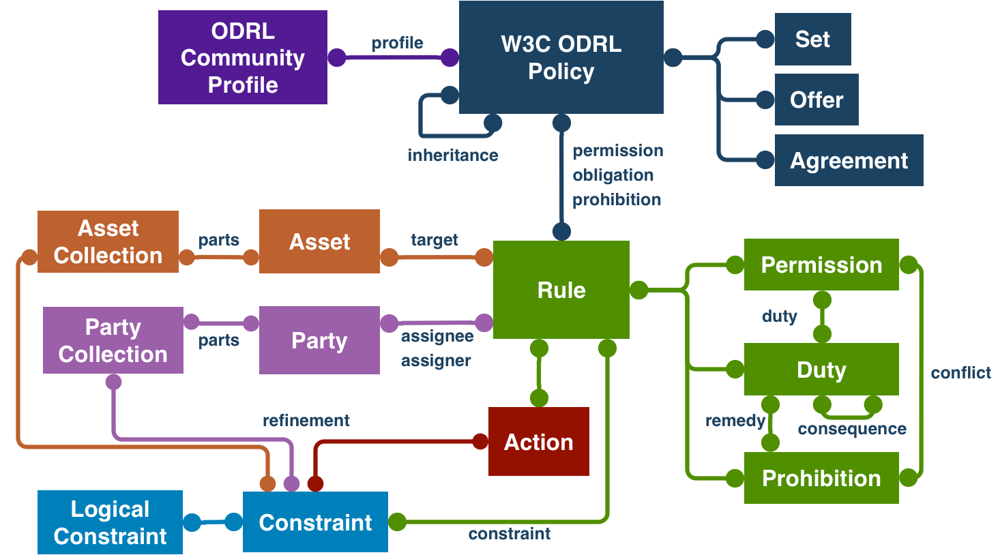
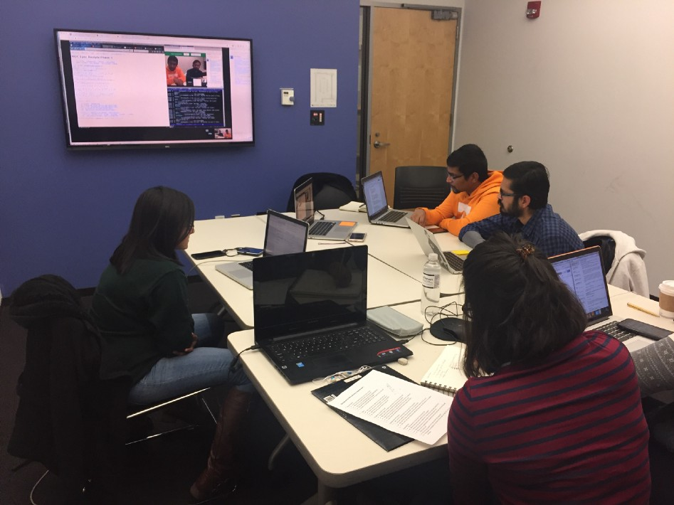

WOFF File Format 2.0 is now a W3C Recommendation
1 March 2018 | Archive
The WebFonts Working Group has published WOFF File Format 2.0 as a W3C Recommendation. Based on experience with WOFF 1.0, which is widely deployed, this specification was developed to provide improved compression and thus lower use of network bandwidth, while still allowing fast decompression even on mobile devices. This is achieved by combining a content-aware preprocessing step and improved entropy coding, compared to the Flate compression used in WOFF 1.0. Read more in the W3C Media Advisory.
WebAssembly First Public Working Drafts
15 February 2018 | Archive
The WebAssembly Working Group has published three First Public Working Drafts:
WebAssembly is a virtual instruction set architecture with many use cases and can be embedded in many different environments, that enables high performance applications on the Web. The design goals of WebAssembly are fast, safe, and portable semantics; efficient and portable representation. WebAssembly code is also intended to be easy to inspect and debug, especially in environments like web browsers.
ODRL 2.2 is now a W3C Recommendation
15 February 2018 | Archive
The Permissions & Obligations Expression Working Group has just published a Recommendation for two documents, namely:
- ODRL Information ModelThe Open Digital Rights Language (ODRL) is a policy expression language that provides a flexible and interoperable information model, vocabulary, and encoding mechanisms for representing statements about the usage of content and services. The ODRL Information Model describes the underlying concepts, entities, and relationships that form the foundational basis for the semantics of the ODRL policies.
Policies are used to represent permitted and prohibited actions over a certain asset, as well as the obligations required to be met by stakeholders. In addition, policies may be limited by constraints (e.g., temporal or spatial constraints) and duties (e.g., payments) may be imposed on permissions.
- ODRL Vocabulary & ExpressionThe ODRL Vocabulary and Expression describes the terms used in ODRL policies and how to encode them.
Please read more in the W3C Blog about ODRL, its story and its future, ODRL: A Path Well Travelled, a post authored by the working group co-chair, Renato Iannella, Monegraph.
W3C Invites Implementations of the Vehicle Information Service Specification
13 February 2018 | Archive
The Automotive Working Group invites implementations of the Vehicle Information Service Specification Candidate Recommendation. This specification defines a WebSocket based API for a Vehicle Information Service (VIS) to enable client applications to get, set, subscribe and unsubscribe to vehicle signals and data attributes.
The purpose of the specification is to promote a Server API that enables application development in a consistent manner across participating automotive manufacturers.
W3C Announces All-out Spec Template Redesign Collaboration
8 February 2018 | Archive
W3C today announced a collaboration with Jefferson University User Experience and Interaction Design program, which has established a class and a small working group of student designers to re-design the W3C’s specification template, aiming to make the standards for the web easier to use. The scope, requirements and audiences considerations are listed in the SpecProd/Restyle wiki.
The students are asking for your guidance, criticism and participation; and will be posting updates, sharing explorations and revisions, and requesting feedback via the Jefferson + W3C Collaboration blog. Everyone who uses or produces W3C specifications is invited to follow along and contribute. This will be a semester-long project for the students, with the goal of producing a prototype for May 2018. (Implementation and deployment plans will follow.)

 The Arabic Layout Task Force, part of the W3C Internationalization Interest Group, has published a First Public Working Draft of Text Layout Requirements for the Arabic Script. This document describes the basic requirements for Arabic script layout and text support on the Web and in eBooks. These requirements provide information for Web technologies such as CSS, HTML and digital publications about how to support users of Arabic scripts. Currently the document focuses on Standard Arabic and Persian. Public comments are welcome, please raise them as github issues.
The Arabic Layout Task Force, part of the W3C Internationalization Interest Group, has published a First Public Working Draft of Text Layout Requirements for the Arabic Script. This document describes the basic requirements for Arabic script layout and text support on the Web and in eBooks. These requirements provide information for Web technologies such as CSS, HTML and digital publications about how to support users of Arabic scripts. Currently the document focuses on Standard Arabic and Persian. Public comments are welcome, please raise them as github issues.